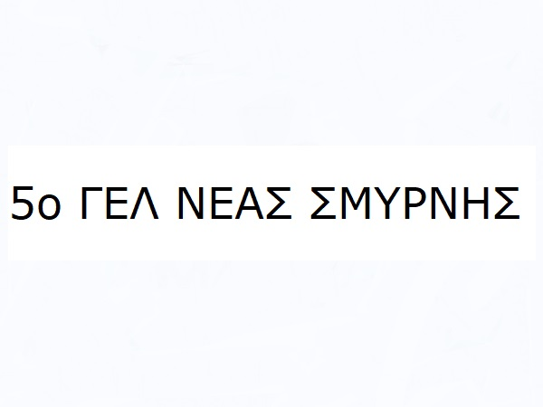

Primary School
First of, starting with elementary school, I went to Geitonas School. There we had many cultural activities, from traditional dance events to the performance of ancient Greek theatrical plays. I cherish these years and the opportunity I was given to learn more about my culture.
Secondary School
For junior high school i went to Malliaras School. It was a different experience. At that time i was quite the nerd! You see, I was studying for my English Proficiency and my German B2 degree.

High School
High School i went to a district school. There I met my best friend. To this day we talk about our pranks and the fun we had. It may not have been the best school but I had the time I needed to study for the final exams.
Bachelor's Degree
For my bachelor's degree I studied at Patras University. There I studied physics and more specifically, after entering the electronics department, I occupied myself with Fiber Optics and a little bit of Programming. At the university the language we were given the opportunity to learn was C++ but after finishing my studies I selftaught Python.
Master's Degree
Currently Im doing my Master's at Athens University, where im studying Information Technology and Communications. We have had many courses with very interesting projects, some more relevant and some less relevant to the master's program title, but all the assignments were eyeopening regardless! It was so much fun learning new things and for that reason I decided I wanted to showcase them in this "Get to Know Me" site.